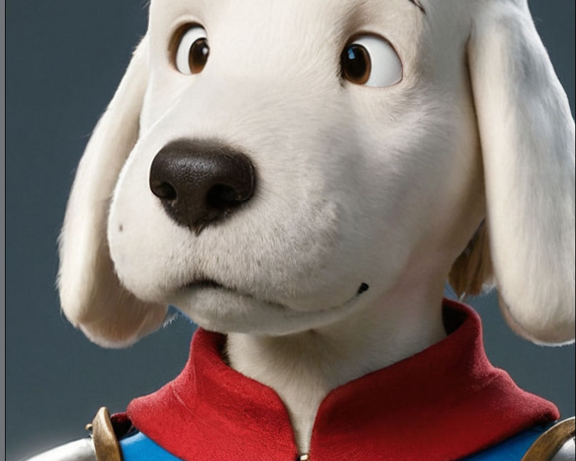
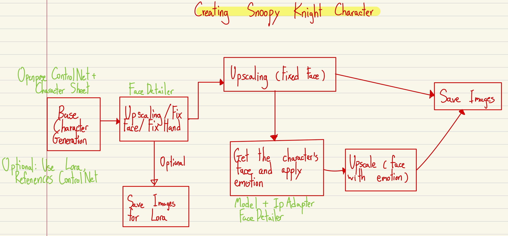
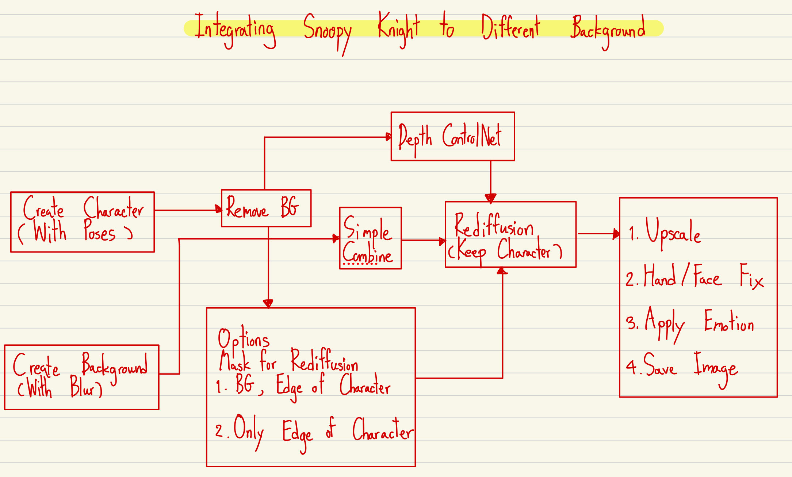
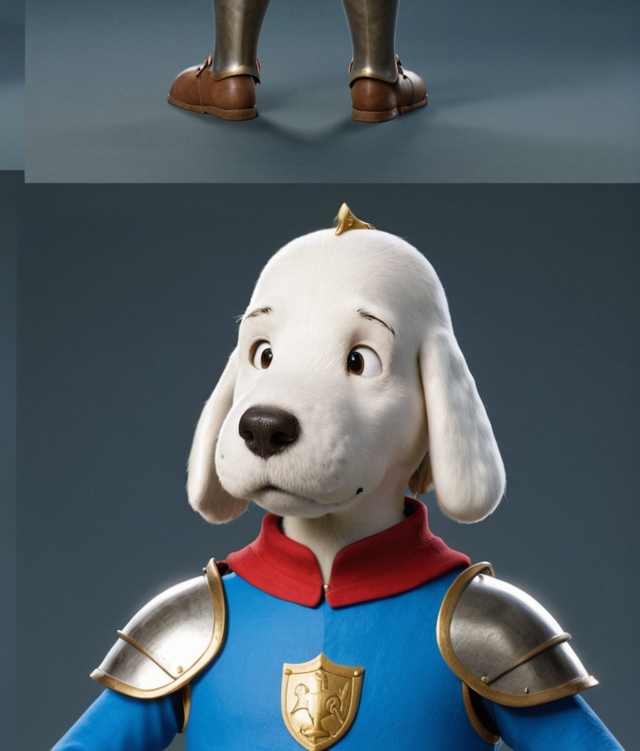
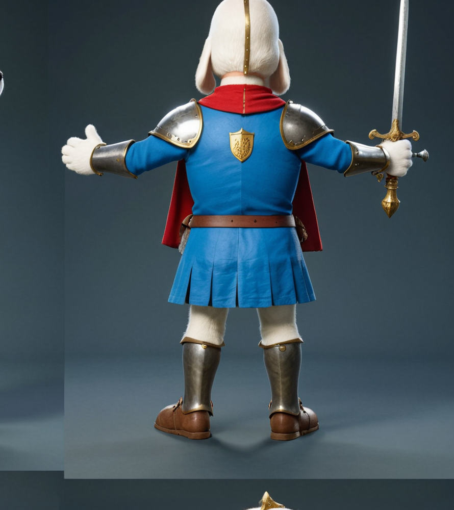

Creating a Consistent Character: Snoopy Knight
Posted on September 10, 2024
In this tutorial, we'll explore the process of creating a consistent character using Stable Diffusion. Our subject is a unique twist on a beloved character: Snoopy as a medieval knight. We'll walk through the steps of generating this character and integrating it into various backgrounds using ComfyUI.
Understanding the Workflow
Our workflow consists of two main parts:
- Creating the Snoopy Knight character 
- Integrating Snoopy Knight into various backgrounds 
Each part of the workflow is detailed in separate JSON files, which you can download and import into ComfyUI.
Step 1: Creating Snoopy Knight
To create our Snoopy Knight character, we use a specialized workflow that involves:
- Using a base Stable Diffusion model
- Applying LoRA (Low-Rank Adaptation) techniques for character consistency
- Fine-tuning prompts to achieve the desired medieval knight aesthetic
You can download the detailed workflow for this step here: SnoopyKnight.json
Step 2: Integrating Snoopy Knight into Backgrounds
Once we have our Snoopy Knight character, we need to seamlessly integrate it into various backgrounds. This process involves:
- Selecting or generating appropriate medieval or fantasy backgrounds
- Using advanced image processing techniques to blend Snoopy Knight into the scene
- Adjusting lighting, shadows, and perspective for realistic integration
The detailed workflow for this integration process can be downloaded here: IntegrateSnoopyKnightIntoBackGround.json
Conclusion
Creating a consistent character like Snoopy Knight demonstrates the power of Stable Diffusion when combined with careful prompt engineering and advanced integration techniques. This workflow can be adapted for various character concepts, opening up endless possibilities for creative projects.
By leveraging the capabilities of ComfyUI and Stable Diffusion, we've created a workflow that allows for the creation and integration of unique, consistent characters. This technique opens up new possibilities for storytelling, game asset creation, and other creative endeavors within the AI art generation ecosystem.
For more inspiring ComfyUI tutorials and techniques, be sure to check out Mick Mumpitz's YouTube channel. Happy creating!